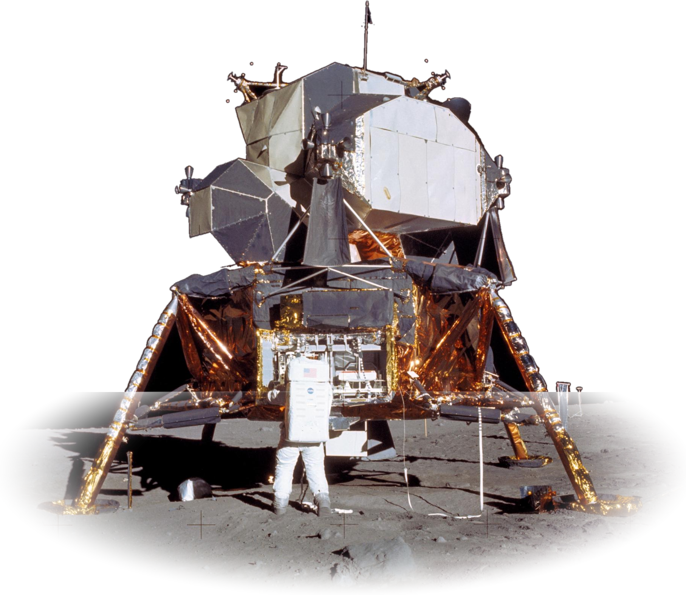
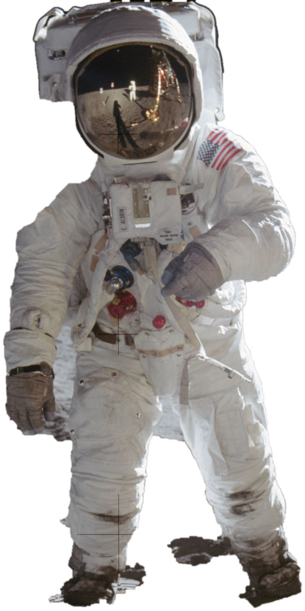
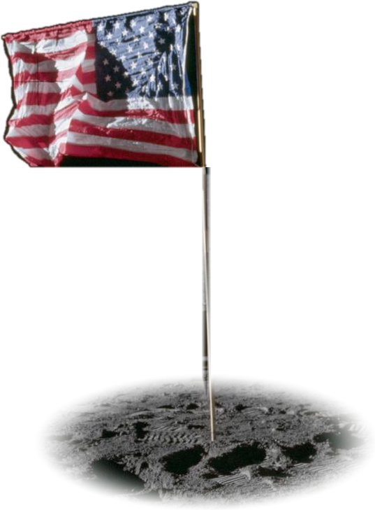
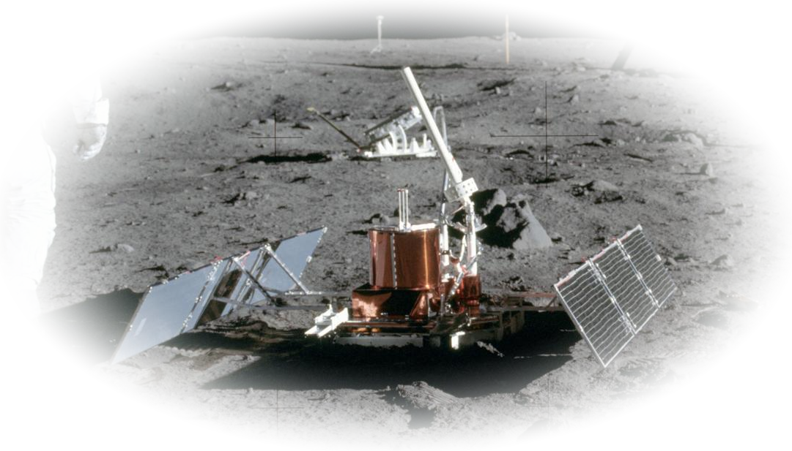
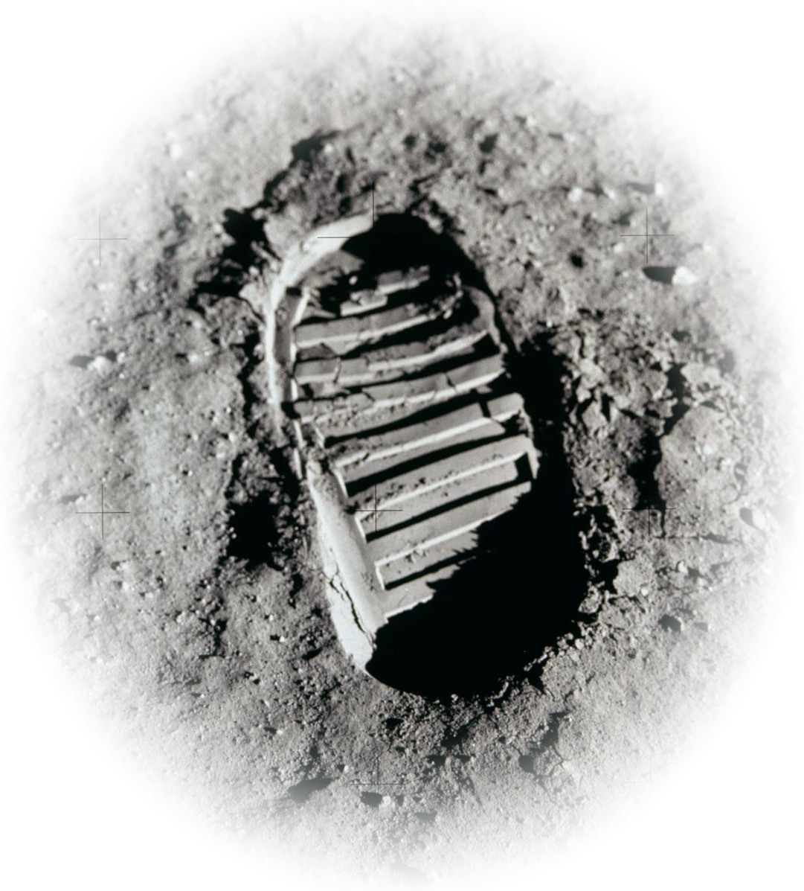
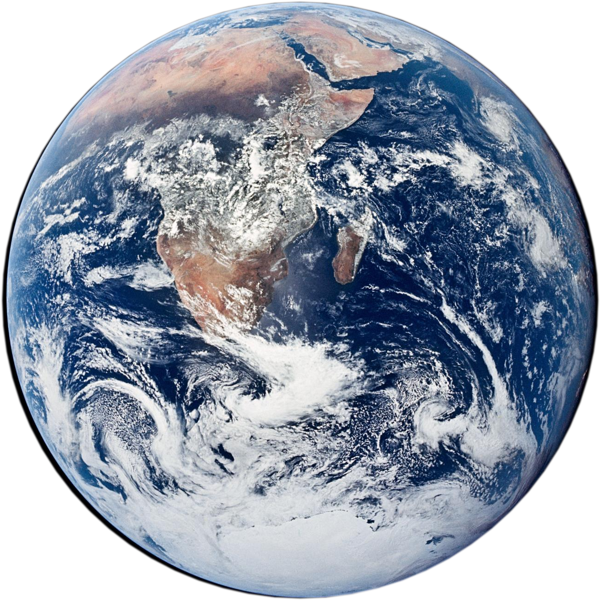

eagle.png · AS11-40-5927

aldrin.png · AS11-40-5903

flag.png · AS11-40-5875

easep-seismometer.png · AS11-40-5948

bootprint.png · AS11-40-5877

earth.png · AS17-148-22727
regolith.jpg · AS11-40-5877